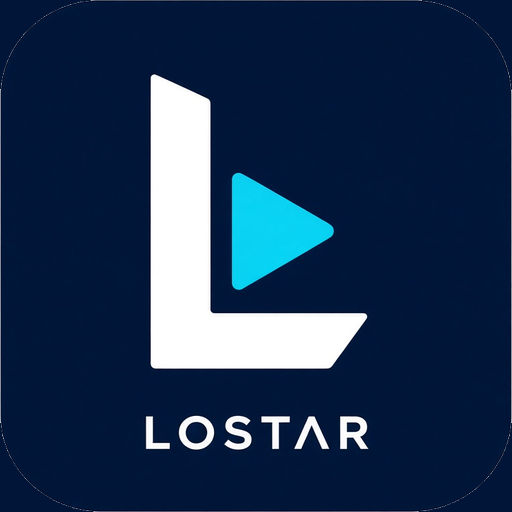
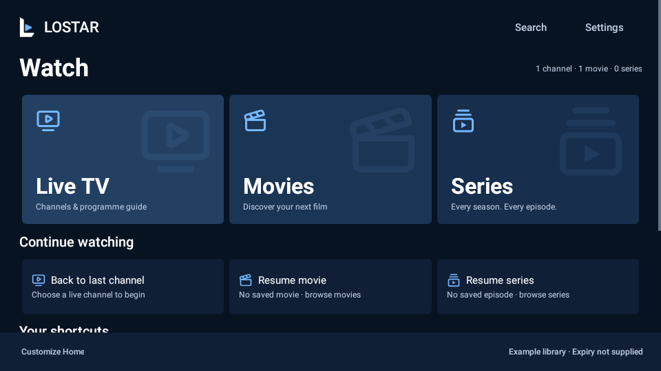

Know what’s on.
Browse channel groups, open the programme guide, and jump into catch-up when your provider supports it.

LOSTAR.YOUR PERSONAL IPTV PLAYER
Live channels. Film nights. One more episode.
Make room for everything you love to watch.
Android · Fire TV · Windows preview

Actual Android interface · example library
LESS SEARCHING. MORE WATCHING.
Connect the playlist you already use.
LOSTAR takes care of the browsing.
Browse channel groups, open the programme guide, and jump into catch-up when your provider supports it.
Posters, categories and resume points bring order to your movie library. Pick up where the credits didn’t roll.
Browse shows by season, choose an episode, and keep your place between sessions.
MAKE IT FEEL LIKE YOU
Thirty colour schemes. Your choice of corners.
A layout for the remote in your hand.
Website colour illustration. App themes are selected in Settings.
BRING YOUR OWN PLAYLIST
Free to use. Choose the version for your device.
LOSTAR does not supply TV channels or subscription content.
Android phones, tablets, Android TV, Fire Stick and Fire Cube running compatible Android-based systems.
Download Android / Fire TV APK ↓Installing on Fire TV?Android 7.0+ · ARM 32-bit, ARM 64-bit and x86-64 in one file. Includes compatible Android-based Fire TV devices. Updates come directly from LOSTAR, with your confirmation.
A separate native player for Windows. This early preview has a smaller feature set than the Android app.
Download Windows preview ZIP ↓How to run the portable appWindows 10/11 x64 · Extract the complete ZIP · Unsigned preview
A separate store edition is prepared but is not available in the Amazon Appstore yet. It will receive updates through Amazon. For a compatible Fire Stick or Fire Cube today, choose the direct Android APK above.
Not yet releasedThe native iOS port is in development. An installable iOS release is not available yet.
In developmentThe buttons download files directly from official GitHub Releases. No GitHub account needed.
Instant push alerts are not active in Android 0.27.4. Home update prompts and optional background checks are available. LOSTAR is free; donations are optional and do not unlock features.
A LITTLE SETUP. A LOT TO WATCH.
BETTER WITH EVERY RELEASE
Android updates come directly from our release channel. No Play Store required. You choose when to download and open the system installer.
Read the release notes ↗Open Settings → About & support → App updates. Automatic Home checks can prompt you when an update is available. Choose Review update, Later or Skip this version.
LOSTAR checks the download’s checksum, app identity, version and signing certificate.
Android asks you to confirm installation. Finish or cancel that prompt before a scheduled recording starts. The first updater-enabled version needs one manual installation.
A FEW THINGS TO KNOW
No. LOSTAR is a player for playlists and streams you are authorised to access. Add your own M3U URL/file or supported provider account. Your provider supplies the content, guide, artwork and catch-up availability.
A correctly signed in-place Android update is designed to retain app data. Do not uninstall first. If Android rejects an update, stop and check the release instructions instead of removing your existing installation. Export an encrypted backup before a major update.
Compatibility depends on the operating system, available memory, hardware decoders and your provider. The Android app targets Android 7.0 and newer; not every Fire TV product uses Android. Multiview and recording are also limited by your device and account connections. DRM-protected services are not promised.
This is a direct APK download outside an app store. Enable installation permission only for the app you use to install LOSTAR, and only if you trust the verified release. LOSTAR cannot install updates silently or bypass the system installer.
This site has no playlist forms, advertising scripts or analytics. GitHub receives ordinary network information when you check or download releases. The hosting service also processes requests needed to serve the site. Your playlist credentials are not sent to this website.